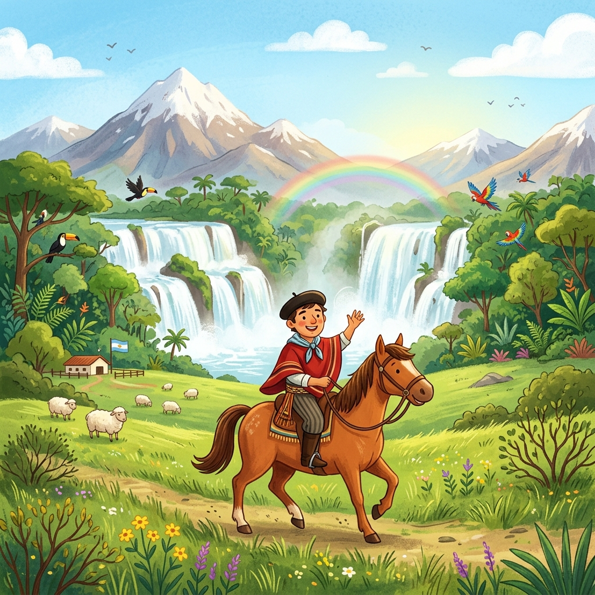
Hier stehen die wichtigsten Daten zu deinem Land. In der App baust du daraus deinen eigenen Steckbrief.
| Hauptstadt | Buenos Aires |
| Kontinent | Südamerika |
| Sprache | Spanisch |
| Währung | Argentinischer Peso |
| Einwohner | rund 46 Millionen Menschen |
| Fläche | etwa 2,8 Millionen km², also fast achtmal so groß wie Deutschland |
| Großer Berg | Aconcagua, 6.961 Meter hoch, der höchste Berg von ganz Amerika |
| Nachbarländer | Chile, Bolivien, Paraguay, Brasilien und Uruguay |
In Argentinien gibt es viele berühmte Orte. Diese vier solltest du kennen.
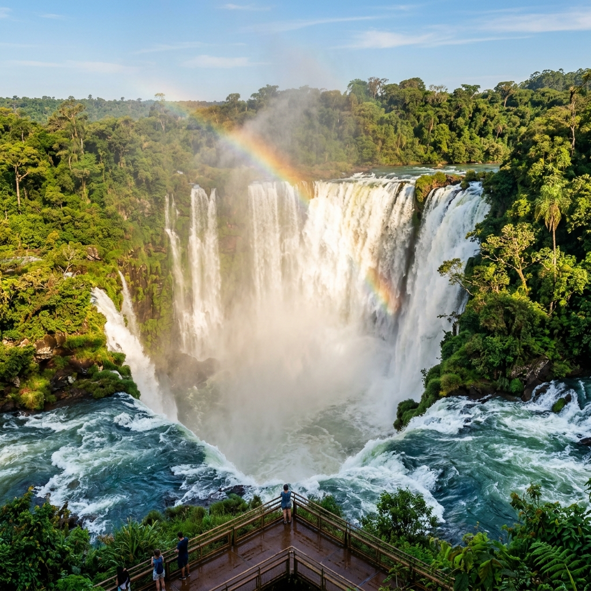
Iguazú-WasserfälleDie Iguazú-Wasserfälle sind riesige Wasserfälle im Norden von Argentinien. Das Wasser stürzt laut donnernd in die Tiefe. Rundherum wächst dichter Regenwald. Bunte Schmetterlinge und Vögel leben hier.
Grüne Wörter für die Appriesige Wasserfällestürztin die Tiefedichter RegenwaldSchmetterlinge
Perito-Moreno-GletscherDer Perito-Moreno-Gletscher ist ein riesiger Gletscher aus Eis. Er liegt im Süden in der Region Patagonien. Immer wieder brechen große Stücke ab und fallen ins Wasser. Das macht ein lautes Krachen.
Grüne Wörter für die Appriesiger Gletscheraus EisPatagonienbrechen große Stücke ablautes Krachen
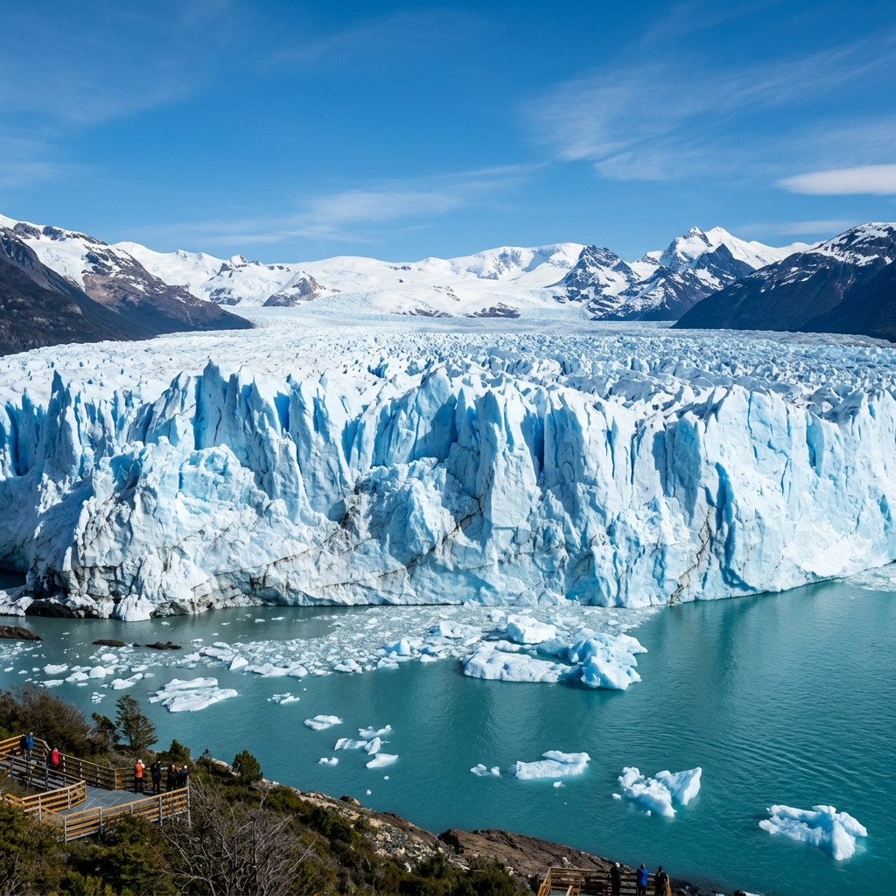
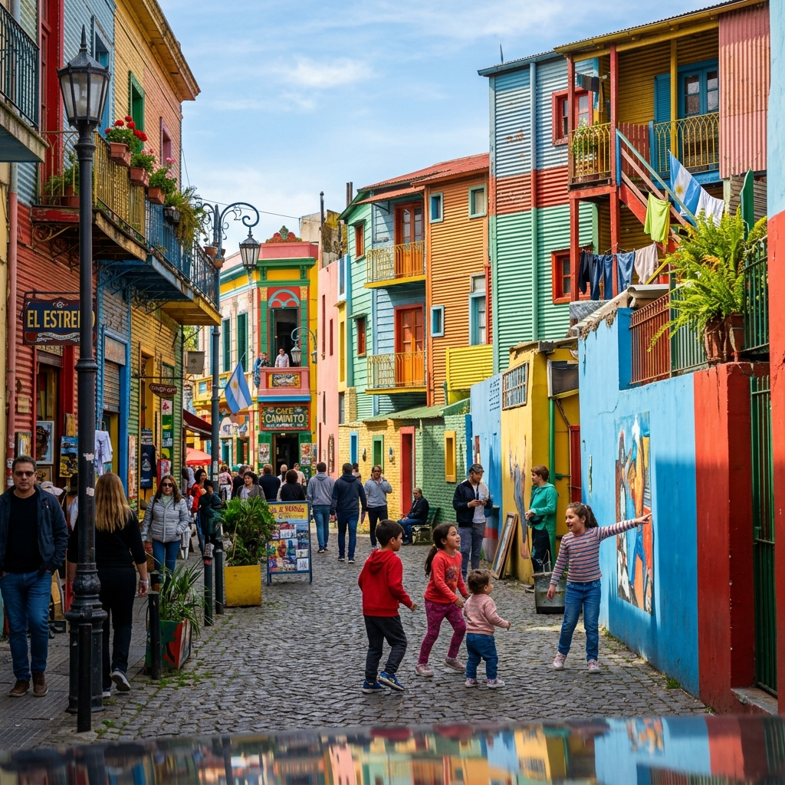
La BocaLa Boca ist ein bunter Stadtteil in Buenos Aires. Die Häuser sind in vielen kräftigen Farben angemalt. Auf den Straßen tanzen Menschen den Tango. Viele Künstler stellen hier ihre Bilder aus.
Grüne Wörter für die Appbunter Stadtteilin Buenos Aireskräftigen Farbenden TangoKünstler
Die PampaDie Pampa ist eine riesige flache Grasebene in Argentinien. Hier leben viele Rinder auf weiten Weiden. Die Cowboys von Argentinien heißen Gauchos. Sie reiten auf Pferden und hüten die Herden.
Grüne Wörter für die Appflache Grasebeneviele Rinderweiten WeidenGauchosauf Pferden
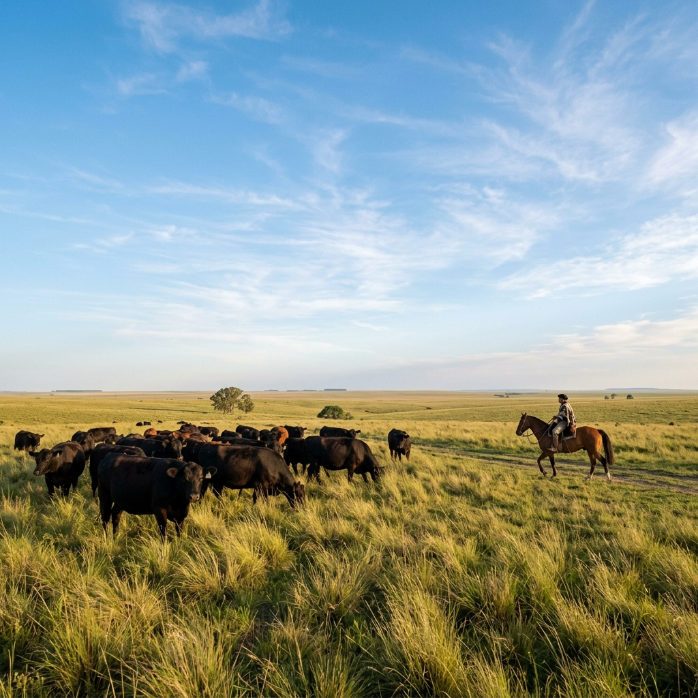
Diese Tiere leben in Argentinien und sind ganz besonders.
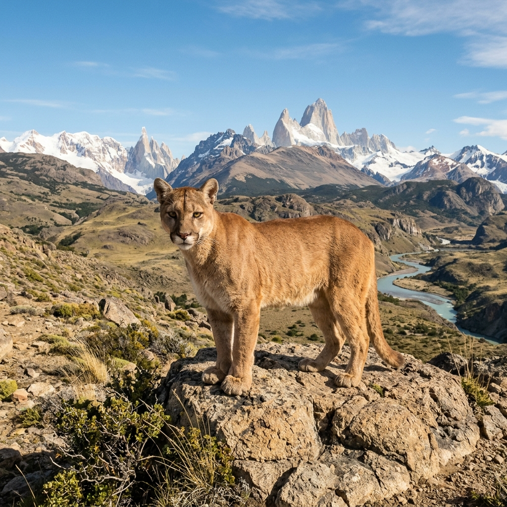
PumaDer Puma ist eine große Raubkatze in Argentinien. Er hat ein braunes Fell und kann sehr weit springen. Am liebsten jagt der Puma allein in der Nacht. Er lebt in den Bergen und in der Pampa.
Grüne Wörter für die Appgroße Raubkatzebraunes Fellweit springenin der Nachtin den Bergen
MagellanpinguinAn der Küste von Argentinien leben viele Pinguine. Sie heißen Magellanpinguine und watscheln an Land. Im Wasser sind sie sehr schnelle Schwimmer. Sie fangen Fische zum Fressen.
Grüne Wörter für die AppAn der Küsteviele Pinguinewatschelnschnelle SchwimmerFische
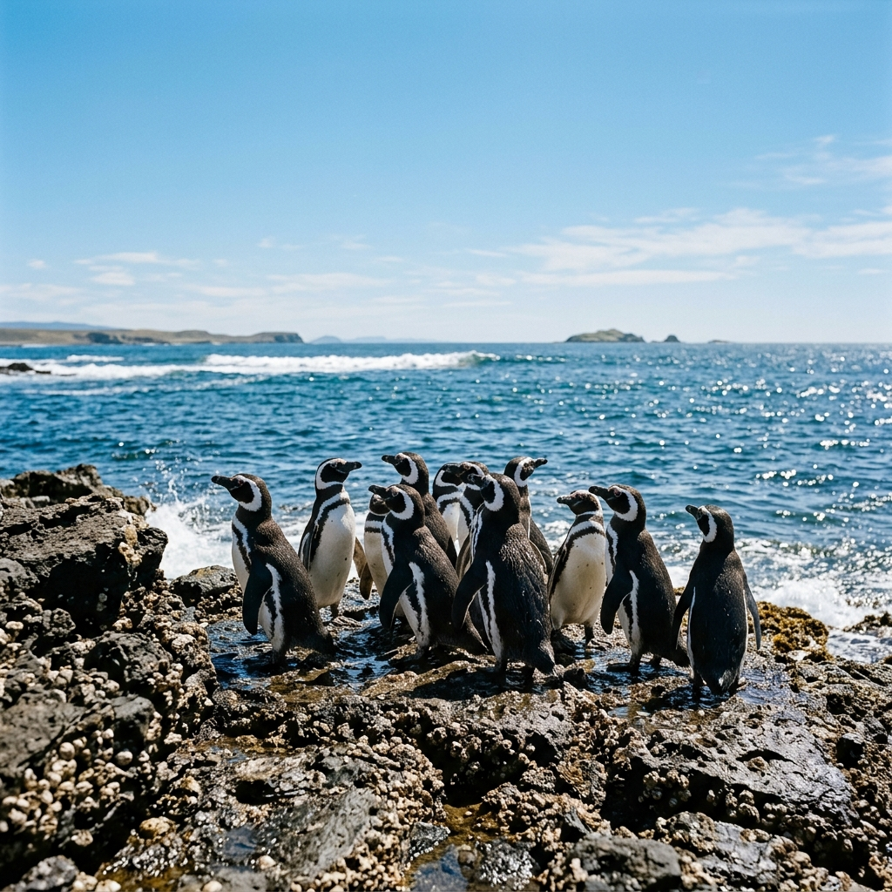
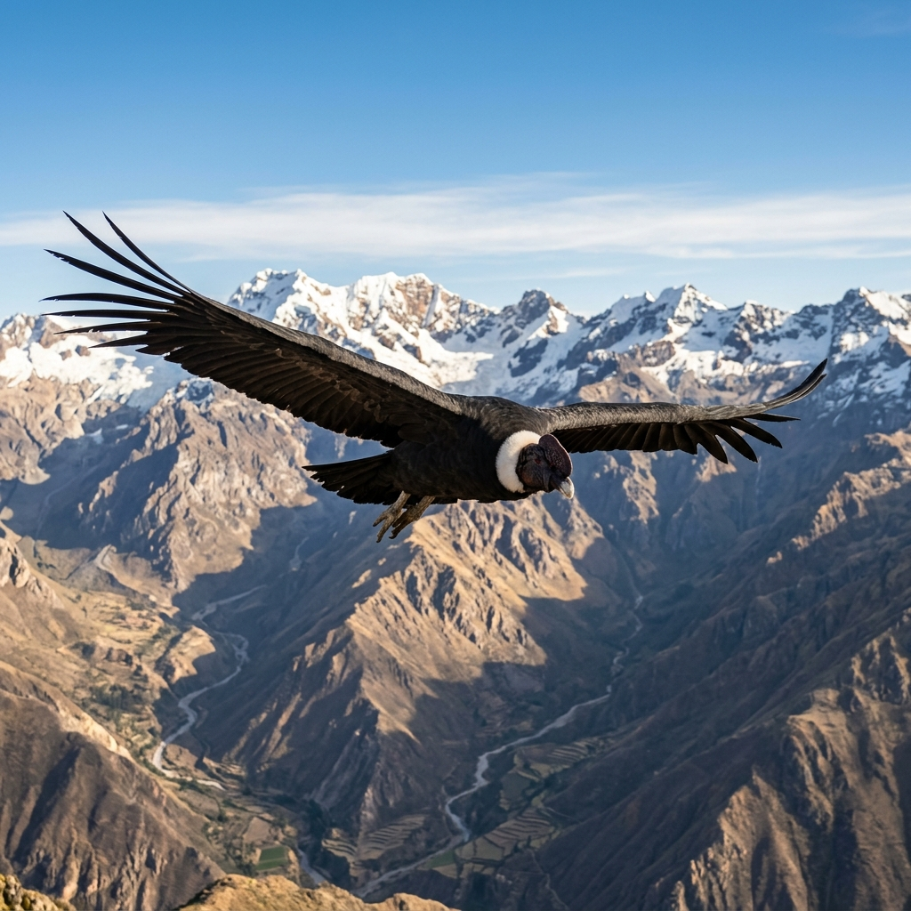
Anden-KondorDer Anden-Kondor ist ein sehr großer Vogel. Er hat breite Flügel und kann hoch über den Bergen gleiten. Der Kondor sucht von oben nach Futter. Er gehört zu den größten Vögeln der Welt.
Grüne Wörter für die Appsehr großer Vogelbreite Flügelüber den Bergenvon obengrößten Vögeln
In der App kannst du beim Essen das Foto nehmen oder dein Gericht selbst malen.
EmpanadasEmpanadas sind kleine gefüllte Teigtaschen. Innen sind sie mit Fleisch, Käse oder Gemüse gefüllt. Man backt sie im Ofen oder brät sie in Öl. In Argentinien isst man Empanadas sehr oft.
Grüne Wörter für die Appgefüllte Teigtaschenmit Fleischim OfenEmpanadassehr oft
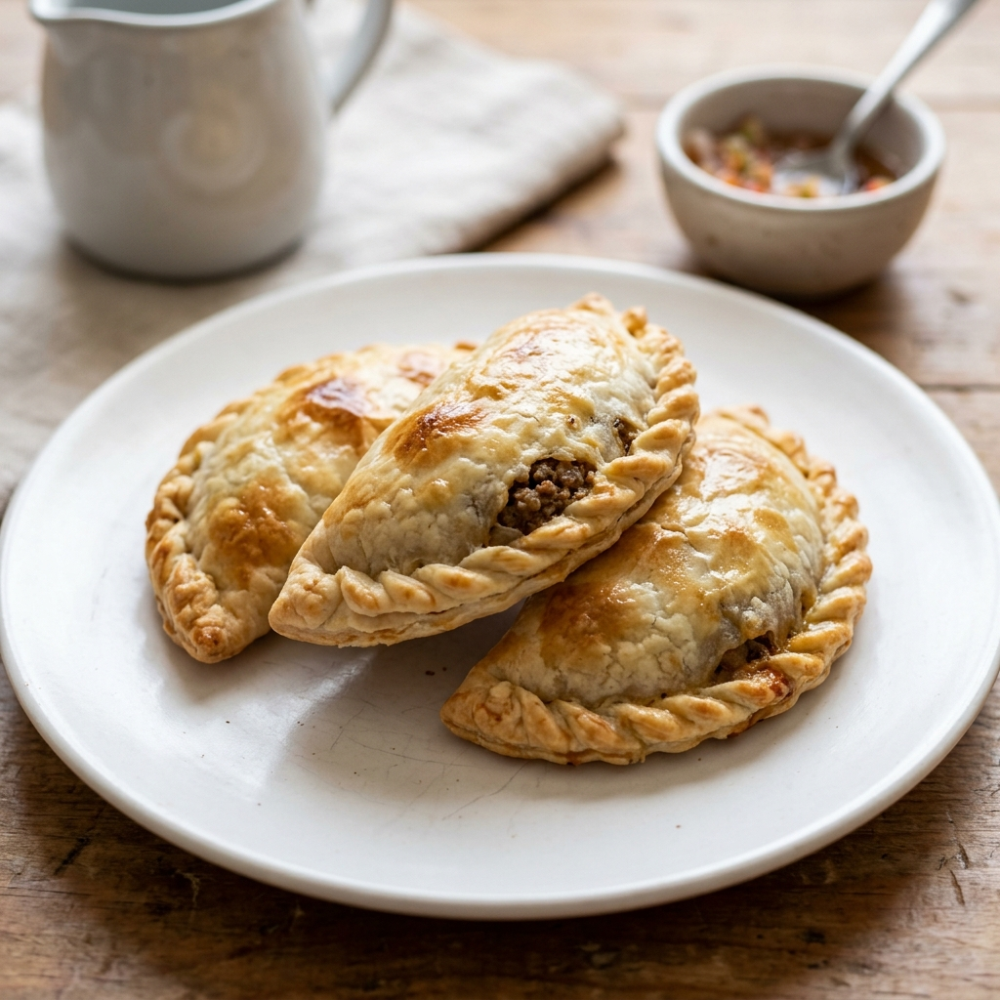
AsadoAsado ist gegrilltes Fleisch vom Rind. In Argentinien gibt es sehr viele Rinder. Die Familie grillt das Fleisch am Wochenende zusammen. Alle sitzen draußen und essen gemeinsam.
Grüne Wörter für die Appgegrilltes Fleischvom Rindviele Rinderam Wochenendegemeinsam
Dulce de LecheDulce de Leche ist eine süße braune Creme. Sie wird aus Milch und Zucker lange gekocht. Die Creme schmeckt wie weiches Karamell. Kinder essen sie gern auf dem Brot oder im Keks.
Grüne Wörter für die Appsüße braune Cremeaus Milchwie weiches Karamellauf dem Brotim Keks
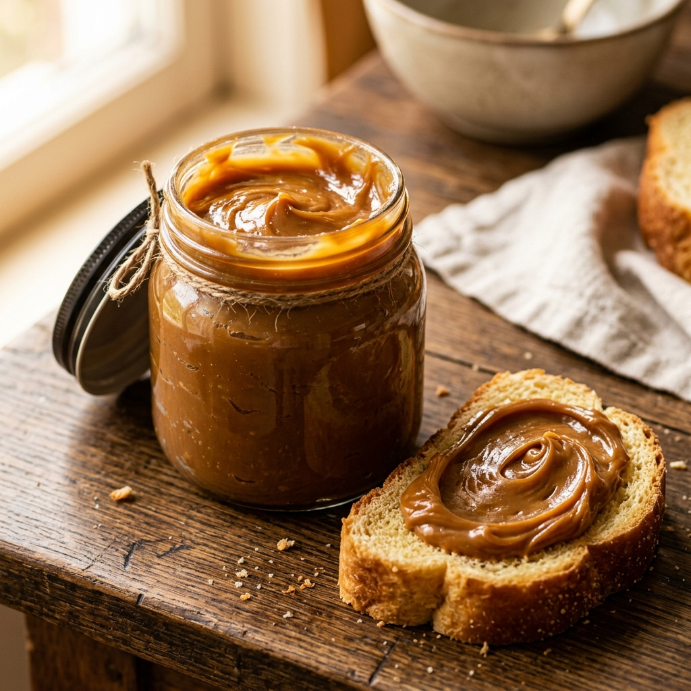
⚽ Gut zu wissen
Die Nationalmannschaft von Argentinien heißt La Albiceleste. Das bedeutet weiß-himmelblau, wie die Flagge. Argentinien wurde schon dreimal Weltmeister. Der berühmteste Spieler heißt Lionel Messi. In Argentinien lieben fast alle den Fußball.
Grüne Wörter für die AppLa Albicelesteweiß-himmelblaudreimal WeltmeisterLionel Messiden Fußball
🌟 Profi-Wissen
Bei der WM 2022 wurde Argentinien Weltmeister. Im Finale besiegten sie Frankreich im Elfmeterschießen. Lionel Messi spielte brillant und viele nennen ihn den besten Fußballer aller Zeiten. Es war sein erster WM-Titel, die ganze Welt jubelte mit ihm.
Grüne Wörter für die AppLionel MessiWM-Sieger 2022Elfmeter gegen Frankreichbester Spieler aller ZeitenLa Albiceleste
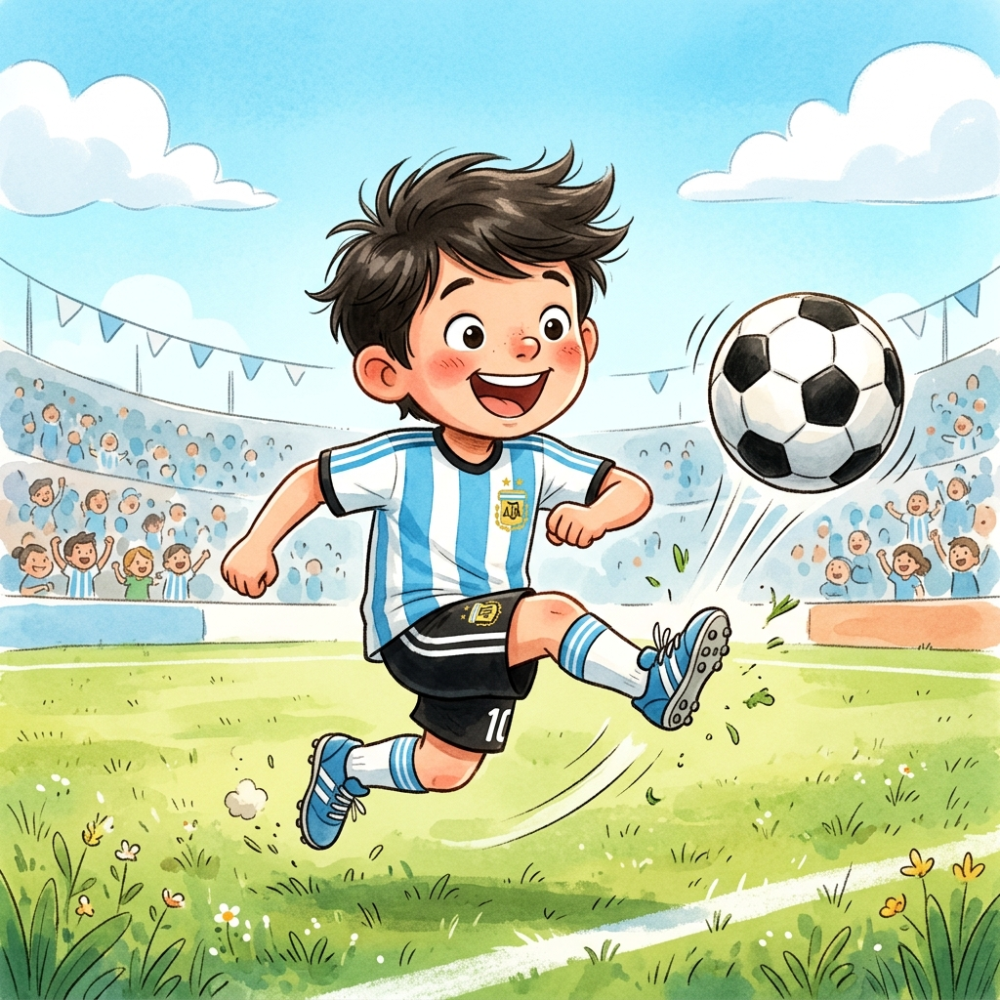
Schule in ArgentinienIn Argentinien tragen viele Kinder einen weißen Kittel über der Kleidung. So sehen alle gleich aus. Die Schule beginnt am Morgen mit der Fahne. Die Kinder lernen Lesen, Schreiben und Rechnen.
Grüne Wörter für die Appeinen weißen Kittelgleich ausam Morgender FahneRechnen
Sommer und StrandIn Argentinien ist im Dezember und Januar Sommer. Dann haben die Kinder lange Sommerferien. Viele Familien fahren ans Meer an den Strand. Dort baden und spielen die Kinder im Sand.
Grüne Wörter für die Appim DezemberSommerSommerferienans Meerim Sand
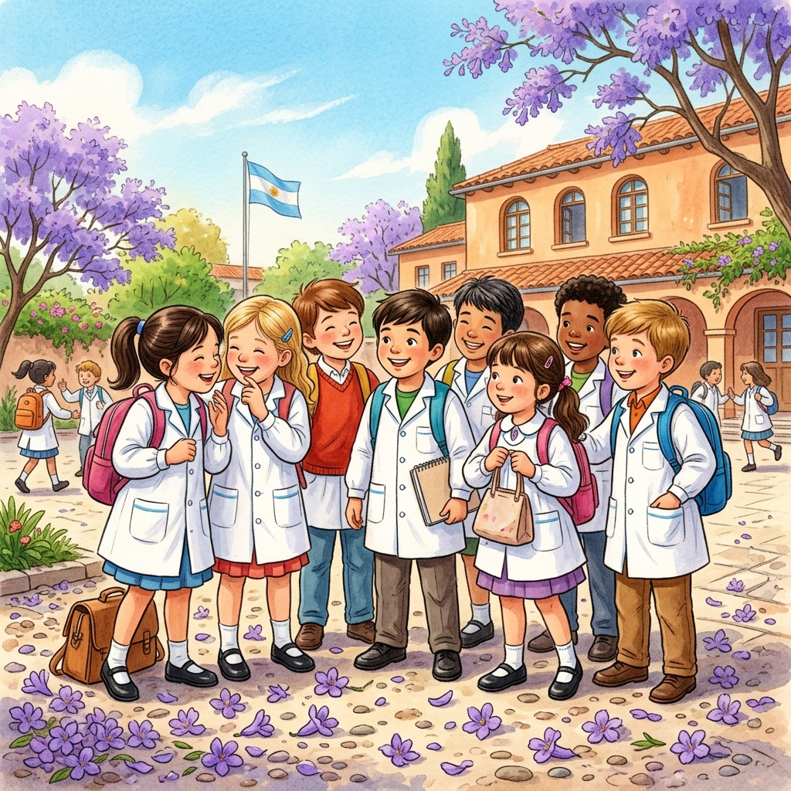